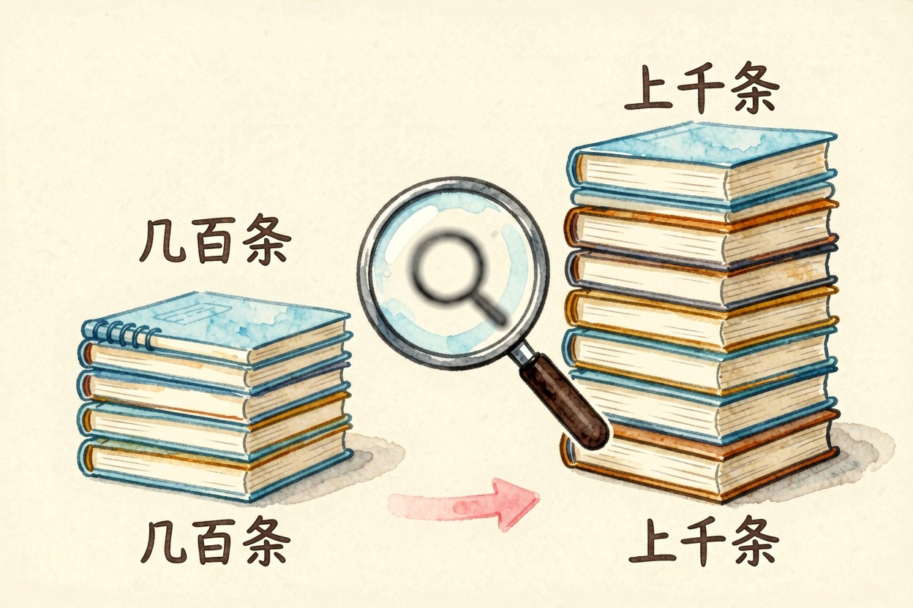
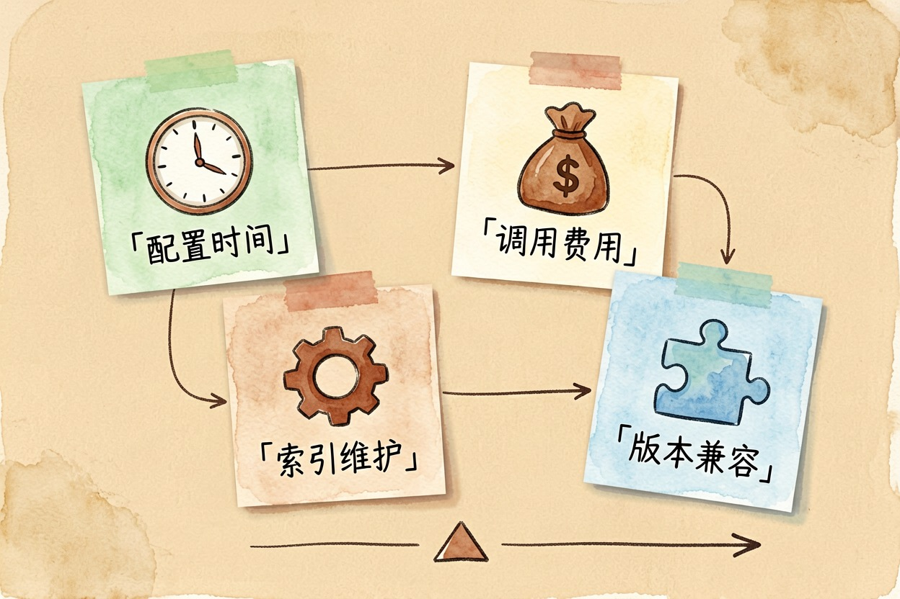
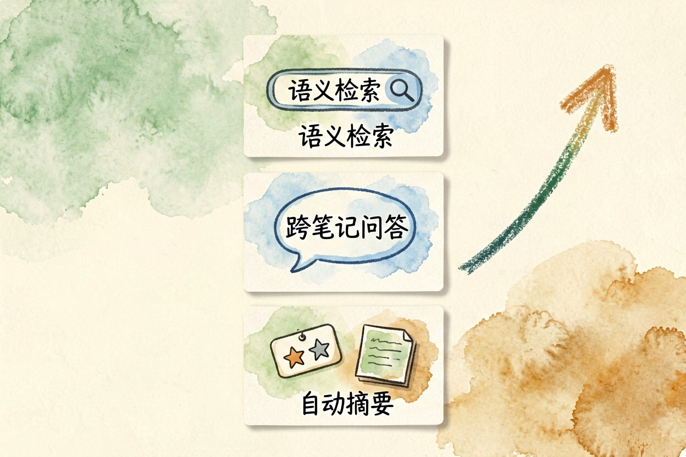
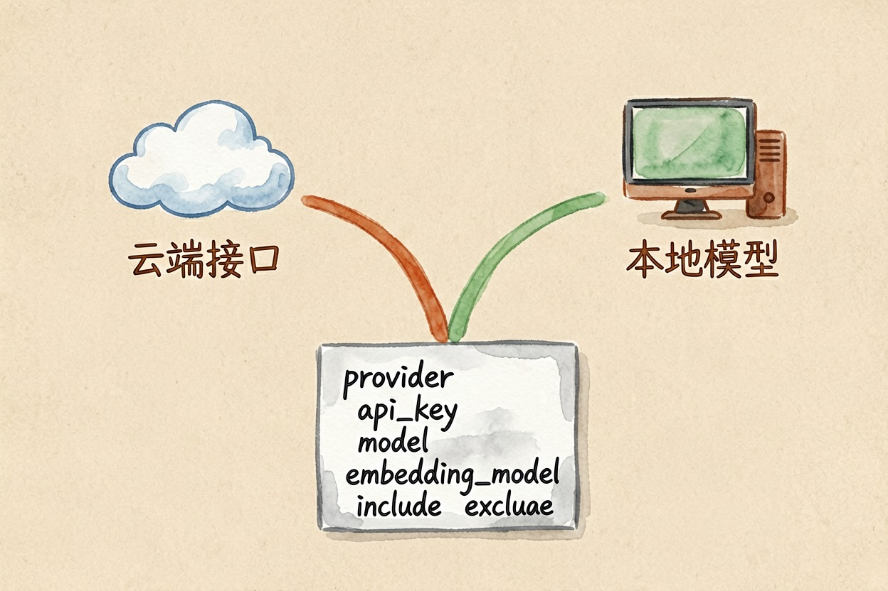
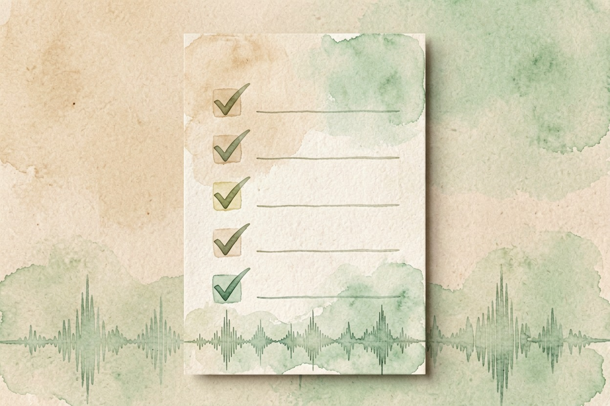

Obsidian 接 AI 值得折腾吗？成本与收益账 — Learntide
插件装上只要十分钟，真正花时间的是索引维护和每次版本更新后的排错。
Obsidian AI 值得用吗：先看你的笔记量

Obsidian AI 值得用吗，这个问题的门槛其实是笔记数量。笔记不到几百条，全文搜索完全够用，接 AI 属于给自己找活干。上千条之后，你开始记不住哪些内容写过，语义检索才真正有价值。
第二个门槛是意愿。Obsidian 的生态靠社区插件撑着，配置项多，出问题得自己查。愿意折腾的人会觉得自由，不愿意的人会觉得每一步都在耗时间。
先把这两条对上，再往下看账怎么算。
接 AI 要付出的四项成本

第一项是配置时间。装插件、填接口地址、选模型、跑通第一次索引，顺利的话一个下午，卡住的话一个周末。
第二项是调用费用。云端模型按量计费，做全库索引和长文问答时消耗明显高于随手聊两句。用之前先在服务商后台设一个额度上限，别裸奔。
第三项是索引维护。笔记改了要重建索引，库大了重建就慢。这件事没有人提醒你，得自己排进习惯里。
第四项是版本兼容。主程序更新、插件更新、接口变更，三条线各走各的。某次更新后功能突然失灵，是常态。
能拿到的三项收益

收益也实在。第一是语义检索。你只记得大概意思，不记得原话，也能把三年前那条笔记捞出来，这是全文搜索给不了的。
第二是跨笔记问答。把散在十几条笔记里的观点汇成一段回答，还能标出各自来自哪个文件。
第三是自动摘要和标签。存量笔记批量补上摘要，找起来省力，思路和搭建个人知识库那套流程是一致的。
两条接入路线与配置示例

第一条是社区 AI 插件加云端接口，上手快，效果稳定，缺点是笔记内容要发到外部服务。
第二条是接本地模型，数据不出机器，代价是要有像样的显卡，响应也慢一些，具体部署可以看本地部署 AI 模型那篇。
多数插件的配置长这样：
provider: openai-compatible
base_url: https://your-endpoint.example.com/v1
api_key: sk-替换成你自己的密钥
model: 换成你实际可用的模型名
embedding_model: 换成你实际可用的向量模型名
index:
include: ["笔记/**/*.md"]
exclude: ["模板/**", "日记/2019/**"]
chunk_size: 800exclude 那两行别省。模板文件和多年前的流水日记进了索引，只会稀释检索结果。首次建库先只索引一个子目录，跑通了再放开。
什么人该折腾，什么人别碰
笔记上千条、长期在本地积累、在意数据不外传的人，这笔投入划算。obsidian ai插件推荐这类清单可以看，但先想清楚你要哪一项能力，再去找对应插件。
反过来，笔记量小、只想开箱即用、不愿处理报错的，别硬上。这类需求用现成的一体化产品更省心。
还有一句得说在前面：接了 AI 不会让你的笔记自动变好。检索再强，也捞不出你没写过的东西。工具从工具导航里挑，但笔记软件接ai值不值，答案在于你的存量够不够厚。obsidian ai值得用吗，说到底是一道关于笔记规模和折腾意愿的算术题。

本文信息核对于 2026-08-08。AI 产品的价格、免费额度与功能变动频繁，实际以各工具官网当前说明为准。